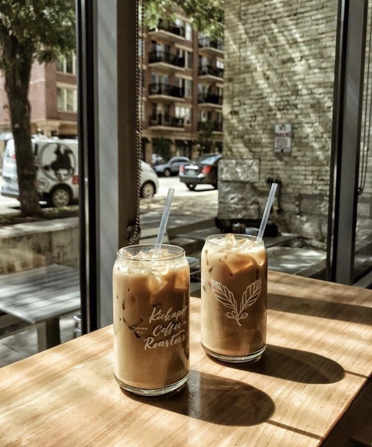
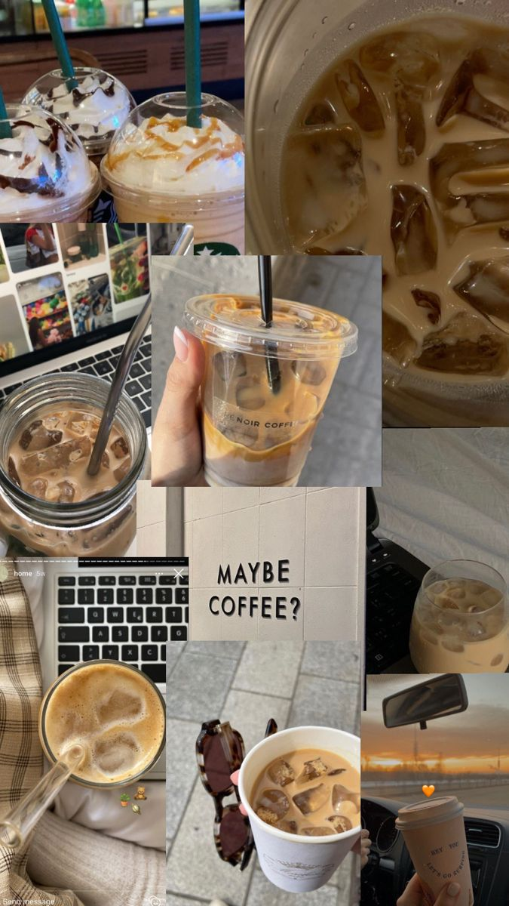

A chilled glass of coffee topped with chocolate crunch — perfect for hot days and mood swings. It’s not just a drink, it’s a vibe. Whether you're studying late or just relaxing, cold coffee always adds that little extra happiness to the moment.
Preparation Time: 10 minutes
Difficulty: Easy
Be careful: Balance sweetness properly.
Sip happens ☕😉